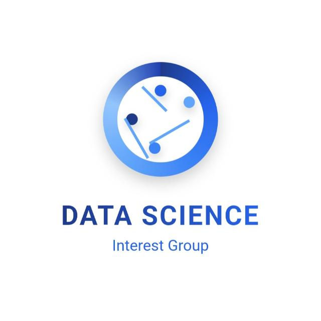

Learn data science by doing it, together.
We are a student-run community at the University of the Witwatersrand. Every week we work through real projects, from cleaning messy data to deploying a model, and each year we send a team to national datathons.

No Data Left Behind is going to nationals. Our 2026 team qualified in 2nd position for the DIRISA Student Datathon Nationals, held at Stellenbosch University from 6 to 11 December 2026. Meet the team
What we are here to do
Solid data foundations matter more than fancy algorithms, and communicating results matters as much as writing code. Every session asks the same question: how is this skill used in a real data job?
Practical skills
Equip undergraduate students with data science skills that apply to real-world challenges.
Community
Build a vibrant data science community that connects students across the CSAM and EIE schools.
Industry bridge
Close the gap between academic learning and industry practice through hands-on projects and collaboration.
Competitions
Take part in undergraduate data science competitions that tackle problems for social good.
What is data science?
Data science is the interdisciplinary field that combines statistics, programming and domain expertise to extract meaningful insights from data and solve complex problems. It drives decisions in nearly every industry, from predicting customer behaviour to diagnosing diseases to optimising operations.
Statistics and mathematics
Understanding patterns in data and making predictions you can defend.
Computer science
Tools like Python and SQL to process and analyse data, and to build machine learning models.
Domain knowledge
Applying insights to real problems in business, healthcare, finance and more.
The data science pipeline
Our sessions and manual follow the order of a real project.
- Data collection
- Data cleaning
- Analysis
- Visualisation
- Model building
- Insight and decision making
- Model deployment
What we cover
Exploratory data analysis
Getting to know a dataset before modelling it.
- Data analysis
- Data visualisation
- Power BI
- Matplotlib
Machine learning
Supervised and unsupervised learning, from first model to evaluation.
- Scikit-Learn
- TensorFlow
- PyTorch
Forecasting
Time series modelling for data that changes over time.
- Pandas
- StatsModels
Natural language processing
Working with text as data.
- NLTK
- spaCy
Model deployment
Getting a model out of the notebook and into people's hands.
- FastAPI
- MLflow
- Streamlit
Training manual
Every topic is written up chapter by chapter, with interactive demos in the Model Playground.
Go to resources →Come to a session
No experience needed. Bring a laptop if you have one.